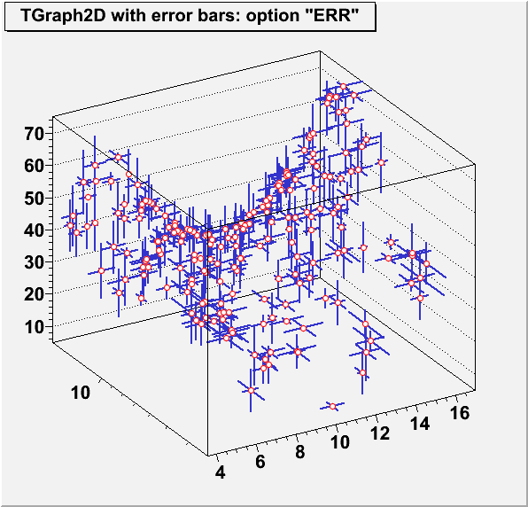
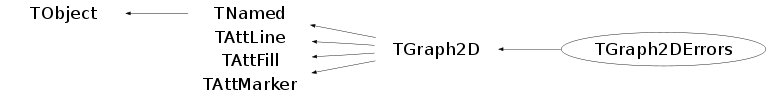

class TGraph2DErrors: public TGraph2D
Graph 2D class with errors
The "ERR" drawing option allows to display the error bars. The following example shows how to use it:
{kind=link}

{
TCanvas *c = new TCanvas("c","Graph2DErrors example",0,0,600,600);
Double_t P = 6.;
Int_t np = 200;
Double_t *rx=0, *ry=0, *rz=0;
Double_t *ex=0, *ey=0, *ez=0;
rx = new Double_t[np];
ry = new Double_t[np];
rz = new Double_t[np];
ex = new Double_t[np];
ey = new Double_t[np];
ez = new Double_t[np];
TRandom *r = new TRandom();
for (Int_t N=0; N<np;N++) {
rx[N] = 2*P*(r->Rndm(N))-P;
ry[N] = 2*P*(r->Rndm(N))-P;
rz[N] = rx[N]*rx[N]-ry[N]*ry[N];
rx[N] = 10.+rx[N];
ry[N] = 10.+ry[N];
rz[N] = 40.+rz[N];
ex[N] = r->Rndm(N);
ey[N] = r->Rndm(N);
ez[N] = 10*r->Rndm(N);
}
TGraph2DErrors *dte = new TGraph2DErrors(np, rx, ry, rz, ex, ey, ez);
dte->SetTitle("TGraph2D with error bars: option \"ERR\"");
dte->SetFillColor(29);
dte->SetMarkerSize(0.8);
dte->SetMarkerStyle(20);
dte->SetMarkerColor(kRed);
dte->SetLineColor(kBlue-3);
dte->SetLineWidth(2);
dte->Draw("err p0");
gPad->SetLogy(1);
return c;
}Function Members (Methods)
public:
protected:
| void | TGraph2D::Build(Int_t n) |
| virtual void | TObject::DoError(int level, const char* location, const char* fmt, va_list va) const |
| void | TObject::MakeZombie() |
private:
| TGraph2DErrors(const TGraph2DErrors&) | |
| TGraph2DErrors& | operator=(const TGraph2DErrors&) |
Data Members
public:
| enum TObject::EStatusBits { | kCanDelete | |
| kMustCleanup | ||
| kObjInCanvas | ||
| kIsReferenced | ||
| kHasUUID | ||
| kCannotPick | ||
| kNoContextMenu | ||
| kInvalidObject | ||
| }; | ||
| enum TObject::[unnamed] { | kIsOnHeap | |
| kNotDeleted | ||
| kZombie | ||
| kBitMask | ||
| kSingleKey | ||
| kOverwrite | ||
| kWriteDelete | ||
| }; |
protected:
| TDirectory* | TGraph2D::fDirectory | !Pointer to directory holding this 2D graph |
| Double_t* | fEX | [fNpoints] array of X errors |
| Double_t* | fEY | [fNpoints] array of Y errors |
| Double_t* | fEZ | [fNpoints] array of Z errors |
| Color_t | TAttFill::fFillColor | fill area color |
| Style_t | TAttFill::fFillStyle | fill area style |
| TList* | TGraph2D::fFunctions | Pointer to list of functions (fits and user) |
| TH2D* | TGraph2D::fHistogram | !2D histogram of z values linearly interpolated |
| Color_t | TAttLine::fLineColor | line color |
| Style_t | TAttLine::fLineStyle | line style |
| Width_t | TAttLine::fLineWidth | line width |
| Double_t | TGraph2D::fMargin | Extra space (in %) around interpolated area for fHistogram |
| Color_t | TAttMarker::fMarkerColor | Marker color index |
| Size_t | TAttMarker::fMarkerSize | Marker size |
| Style_t | TAttMarker::fMarkerStyle | Marker style |
| Int_t | TGraph2D::fMaxIter | Maximum number of iterations to find Delaunay t> |
| Double_t | TGraph2D::fMaximum | Maximum value for plotting along z |
| Double_t | TGraph2D::fMinimum | Minimum value for plotting along z |
| TString | TNamed::fName | object identifier |
| Int_t | TGraph2D::fNpoints | Number of points in the data set |
| Int_t | TGraph2D::fNpx | Number of bins along X in fHistogram |
| Int_t | TGraph2D::fNpy | Number of bins along Y in fHistogram |
| TVirtualHistPainter* | TGraph2D::fPainter | !pointer to histogram painter |
| Int_t | TGraph2D::fSize | !Real size of fX, fY and fZ |
| TString | TNamed::fTitle | object title |
| Double_t* | TGraph2D::fX | [fNpoints] |
| Double_t* | TGraph2D::fY | [fNpoints] Data set to be plotted |
| Double_t* | TGraph2D::fZ | [fNpoints] |
| Double_t | TGraph2D::fZout | fHistogram bin height for points lying outside the interpolated area |
Class Charts
{kind=link}
{kind=link}
{kind=link}
{kind=link}

Function documentation
TGraph2DErrors(Int_t n, Double_t* x, Double_t* y, Double_t* z, Double_t* ex = 0, Double_t* ey = 0, Double_t* ez = 0, Option_t* option = "")
TGraph2DErrors constructor with doubles vectors as input.
Double_t GetErrorX(Int_t bin) const
This function is called by Graph2DFitChisquare. It returns the error along X at point i.
Double_t GetErrorY(Int_t bin) const
This function is called by Graph2DFitChisquare. It returns the error along X at point i.
Double_t GetErrorZ(Int_t bin) const
This function is called by Graph2DFitChisquare. It returns the error along X at point i.
void Set(Int_t n)
Set number of points in the 2D graph. Existing coordinates are preserved. New coordinates above fNpoints are preset to 0.
void SetPointError(Int_t i, Double_t ex, Double_t ey, Double_t ez)
Set ex, ey and ez values for point number i
TGraph2DErrors(const TGraph2DErrors& )
TGraph2DErrors& operator=(const TGraph2DErrors& )